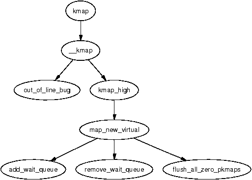
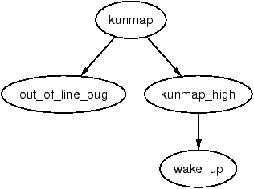
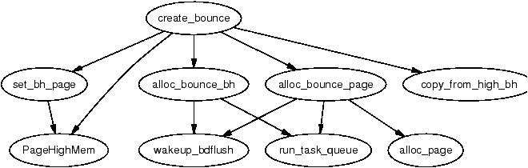
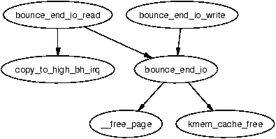
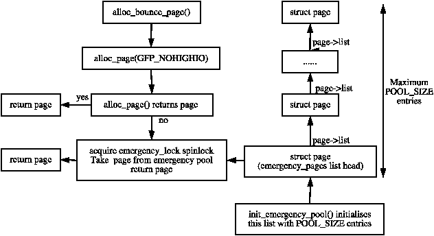

内核只能直接寻址那些已经为其建立了页表项的内存。在最常见的 3GiB/1GiB 用户/内核地址空间划分下，正如4.1 节所介绍的，在 32 位机器上任何时刻内核最多只能直接访问 896MiB 的内存。在 64 位硬件上这并不是真正的问题，因为虚拟地址空间绰绰有余；运行 2.4 内核且内存超过若干 TB 的机器极不可能出现。
然而许多高端 32 位机器拥有超过 1GiB 的内存，那些位置不便访问的内存并不能简单地被忽视。Linux 采用的解决方案是临时把高端内存中的页映射到低端页表中。这一点将在 9.2 节中讨论。
高端内存还与 I/O 有一个相关问题需要解决：并非所有设备都能寻址高端内存，也并非所有 CPU 可用的内存设备都能访问。当 CPU 启用了 PAE 扩展、设备的寻址范围被限制为有符号 32 位整数（2GiB），或者 32 位设备运行在 64 位架构上时，就会出现这种情况。让这种设备向高端内存写数据轻则失败，重则可能扰乱内核。该问题的解决方案是使用 反弹缓冲区（bounce buffer），详见 9.4 节。
本章首先简要介绍如何管理 持久内核映射（Persistent Kernel Map，PKMap） 地址空间，然后讨论高端内存页的映射与解除映射；后续小节将讨论必须使用原子映射的情形，并深入分析反弹缓冲区；最后我们会谈到内存极度紧张时是如何利用应急池（emergency pool）的。
内核页表顶端为 PKMap 预留了从 PKMAP_BASE 到 FIXADDR_START 的一段空间，其大小略有不同。在 x86 上，PKMAP_BASE 位于 0xFE000000，而 FIXADDR_START 的地址是一个编译期常量，会随配置选项变化，但通常只是位于线性地址空间末尾附近的少数几页。这意味着用于将高端内存页映射进可用空间的页表区域略小于 32MiB。
为了映射页，在 PKMap 区域的起始处放置了一整页的 PTE，可以通过函数 kmap() 将 1024 个高端页映射到低端内存中作短期使用，再通过 kunmap() 解除映射。这个池子看上去非常小，但每一页通过 kmap() 映射的时间也非常短。代码注释中提到曾计划分配一段连续的页表项来扩展这片区域，但这只停留在注释里，所以 PKMap 的大部分空间实际上并未被使用。
与 kmap() 配合使用的页表项叫做 pkmap_page_table，位于 PKMAP_BASE，在系统初始化期间建立。在 x86 上，这一过程发生在 pagetable_init() 函数的末尾。PGD 与 PMD 项所需的页由启动期内存分配器分配以确保它们存在。
页表项的当前状态由一个名为 pkmap_count 的简单数组管理，该数组含有 LAST_PKMAP 个元素。在未启用 PAE 的 x86 系统上，这个值为 1024；启用 PAE 时为 512。更准确地说，虽然在代码中没有这样表达，LAST_PKMAP 在效果上等价于 PTRS_PER_PTE。
数组中的每个元素并不严格等同于引用计数，但非常接近。如果该项为 0，说明该页是空闲的，并且自上次 TLB 刷新以来没有被使用过；如果为 1，说明该槽位未被使用，但仍有一页映射在那里等待 TLB 刷新。刷新会被推迟，直到每个槽位都至少被使用过一次才进行，因为修改全局页表时需要对所有 CPU 进行一次全局刷新，开销极大。任何更高的值都是表示当前页有 n-1 个用户的引用计数。
用于映射高端内存页的 API 列于表 9.1。映射一页的主函数是 kmap()。对于不希望阻塞的用户，可以使用 kmap_nonblock()；中断上下文的用户则使用 kmap_atomic()。由于 kmap 池本身相当小，kmap() 的调用者必须尽快调用 kunmap()，因为随着高端内存相对低端内存的不断扩大，这个小窗口所承受的压力也会逐渐变大。

kmap() 函数本身相当简单。它首先检查当前是否处于中断上下文（因为它可能会睡眠），若是则调用 out_of_line_bug()。中断处理程序中调用 BUG() 会导致系统 panic，所以 out_of_line_bug() 会打印 bug 信息后干净地退出。第二项检查是该页是否在 highmem_start_page 之下，低于此标记的页本来就可见，无需再映射。
然后检查该页是否本就位于低端内存中；如果是，则直接返回它的地址。这样，需要 kmap() 的使用者就可以无条件地使用它，因为即便它已经是一个低端内存页，函数仍然是安全的。如果它确实是要映射的高端页，就调用 kmap_high() 来开始真正的工作。
kmap_high() 函数首先检查 page→virtual 字段，如果该页已经被映射，这个字段就会被设置。如果它为 NULL，则由 map_new_virtual() 为该页提供一个映射。
用 map_new_virtual() 创建一个新的虚拟映射其实就是对 pkmap_count 做线性扫描。扫描从 last_pkmap_nr 开始而不是从 0 开始，是为了避免在多次 kmap() 之间反复搜索同一片区域。当 last_pkmap_nr 回绕到 0 时，会调用 flush_all_zero_pkmaps() 把所有值为 1 的项重置为 0，然后再刷新 TLB。
如果再次扫描后仍未找到空闲项，进程就会在 pkmap_map_wait 等待队列上睡眠，直到下一次 kunmap() 之后被唤醒。
一旦建立了映射，pkmap_count 数组中对应的项就会递增，并返回低端内存中的虚拟地址。
| void * kmap(struct page *page) |
| 把一个来自高端内存的 struct page 映射到低端内存。返回的地址即该映射的虚拟地址。 |
| void * kmap_nonblock(struct page *page) |
| 与 kmap() 相同，但在没有可用槽位时不会阻塞，而是返回 NULL。这与 kmap_atomic() 不同，后者使用专门保留的槽位。 |
| void * kmap_atomic(struct page *page, enum km_type type) |
| 映射中保留了若干槽位供中断等场景作原子使用（见 9.3 节）。强烈不建议使用它，且本函数的调用者既不能睡眠也不能被调度。该函数会为某一特定用途将一个高端内存页原子地映射进来。 |
解除高端内存页映射的 API 列于表 9.2。kunmap() 函数与其对偶函数一样要做两项检查：第一项与 kmap() 完全相同，用于检查是否在中断上下文调用；第二项检查该页是否在 highmem_start_page 之下，如果是，则该页本就位于低端内存中，无需进一步处理。一旦确定它是要解除映射的页，就调用 kunmap_high() 完成解除映射。

kunmap_high() 在原理上很简单：它将 pkmap_count 中该页对应的元素递减。如果递减到 1（回忆一下，这意味着已经没有用户但仍需要一次 TLB 刷新），任何等待在 pkmap_map_wait 上的进程都会被唤醒，因为现在有一个槽位变得可用。此时并不会立刻从页表中解除该页的映射，因为那会需要一次 TLB 刷新；这一步会推迟到 flush_all_zero_pkmaps() 被调用时才进行。
| void kunmap(struct page *page) |
| 把一个 struct page 从低端内存中解除映射，并释放对应的页表项。 |
| void kunmap_atomic(void *kvaddr, enum km_type type) |
| 解除一个之前通过原子方式映射的页。 |
虽然不建议使用 kmap_atomic()，但每个 CPU 仍然保留了若干槽位供必要时使用，例如设备在中断中使用反弹缓冲区的场景。各种架构对原子高端内存映射的需求数量不同，这些需求由 km_type 枚举。总用途数目为 KM_TYPE_NR。在 x86 上，原子 kmap 一共有六种不同的用途。
启动时会为每个处理器在 FIX_KMAP_BEGIN 到 FIX_KMAP_END 的位置预留 KM_TYPE_NR 个槽位供原子映射使用。显然，原子 kmap 的使用者在调用 kunmap_atomic() 之前不能睡眠或退出，否则同一处理器上的下一个进程可能会尝试使用同一个槽位而失败。
kmap_atomic() 函数的任务非常简单：将请求的页映射到页表中为相应用途和处理器预留的槽位。kunmap_atomic() 比较有意思，因为它只在启用了调试时才会用 pte_clear() 清除 PTE。一般认为没必要费心去解除原子页的映射，因为下次调用 kmap_atomic() 时只会直接替换它，从而无需 TLB 刷新。
对于无法访问 CPU 可用内存全部范围的设备，需要使用反弹缓冲区。一个明显的例子是：当设备的寻址位数少于 CPU 时，例如 64 位架构上的 32 位设备，或者启用了 PAE 的较新 Intel 处理器。
其基本思想非常简单：反弹缓冲区位于足够低的内存中，便于设备从中读取和向其中写入数据；之后再将其内容复制到高端内存中所期望的用户页。这一额外的复制并不理想，但难以避免。我们在低端内存中分配若干页作为缓冲页，用于与设备之间的 DMA；I/O 完成之后，内核再将它们复制到高端内存中的缓冲页。这样反弹缓冲区就充当了一种桥梁。这一操作的开销不小，至少要复制整整一页，但与把低端内存中的页换出相比仍然微不足道。
通常大小约为 1KiB 的块被打包到页中，并由 slab 分配器分配的 struct buffer_head 进行管理。buffer head 的使用者可以选择注册一个回调函数，存放在 buffer_head→b_end_io()，当 I/O 完成时调用。反弹缓冲区正是利用这一机制把数据从反弹缓冲区中复制出去。它注册的回调函数是 bounce_end_io_write()。
buffer head 的其它特性，以及块层是如何使用它们的，超出了本文档的范围，更属于 I/O 层的话题。
反弹缓冲区的创建过程很简单，由 create_bounce() 函数发起。原理非常简单：以传入的 buffer head 为模板创建一个新缓冲区。该函数接受两个参数：一个读/写参数（rw）和用作模板的 buffer head（bh_orig）。

缓冲区本身的页由 alloc_bounce_page() 函数分配，它是对 alloc_page() 的封装，但有一个重要的补充：如果分配失败，反弹缓冲区还备有一个由页和 buffer head 组成的应急池可用。详见 9.5 节。
buffer head 不出意外地由 alloc_bounce_bh() 分配，其原理与 alloc_bounce_page() 类似，会调用 slab 分配器申请一个 buffer_head，若分配失败则使用应急池。此外，它还会唤醒 bdflush 开始将脏缓冲区刷写到磁盘，以便更快释放更多 buffer。
一旦分配好页和 buffer_head，就将模板 buffer_head 中的信息复制到新的对象里。由于这一过程的部分操作可能使用 kmap_atomic()，所以反弹缓冲区只能在持有 IRQ 安全的 io_request_lock 时创建。I/O 完成回调被改为 bounce_end_io_write() 或 bounce_end_io_read()，取决于这是写缓冲区还是读缓冲区，以便数据能在高端内存与反弹缓冲区之间来回拷贝。
关于这些分配，最值得注意的一点是 GFP 标志要求绝不能进行涉及高端内存的 I/O 操作。具体而言，对 slab 分配器使用 SLAB_NOHIGHIO，对伙伴分配器使用 GFP_NOHIGHIO。这一点很重要，因为反弹缓冲区本就是用于高端内存的 I/O 操作。如果分配器在分配时又尝试执行涉及高端内存的 I/O，就会递归，最终导致崩溃。

通过反弹缓冲区复制数据的方式取决于它是读缓冲区还是写缓冲区。如果缓冲区用于向设备写入数据，那么在创建反弹缓冲区时就会通过 copy_from_high_bh() 函数把高端内存中的数据填入缓冲区；之后当设备准备就绪时，回调函数 bounce_end_io_write() 会完成 I/O。
如果缓冲区用于从设备读取数据，那么在设备准备好之前不会发生任何数据传输。当设备就绪时，设备的中断处理程序会调用回调函数 bounce_end_io_read()，由它通过 copy_to_high_bh_irq() 把数据复制到高端内存。
无论哪种情况，一旦 I/O 完成，buffer head 和页都可以被 bounce_end_io() 回收，并调用模板 buffer_head() 的 I/O 完成函数。如果应急池未满，资源就会被放回应急池；否则就归还给相应的分配器。
专门为反弹缓冲区维护着两个应急池：一个用于 buffer_heads，一个用于页。如果内存紧张到连分配都无法完成，那么 I/O 请求若不能完成，情况只会进一步恶化，因为只有等到低端内存可用，高端内存中的缓冲区才能被释放，而进程因此停滞，反过来又无法释放它们自己持有的内存。
应急池由 init_emergency_pool() 初始化，每个池最多包含 POOL_SIZE 个元素，目前该值定义为 32。页通过 page→list 字段链接在以 emergency_pages 为表头的链表上。图 9.5 展示了页在应急池中的存放方式以及在需要时如何取用。
buffer_head 也非常类似，它们通过 buffer_head→inode_buffers 链接在以 emergency_bh 为表头的链表上。两个链表剩余条目的数量分别由计数器 nr_emergency_pages 和 nr_emergency_bhs 记录，链表本身由 emergency_lock 自旋锁保护。

在 2.4 中，高端内存管理器是唯一维护应急页池的子系统。到了 2.6，内存池被作为一个通用概念实现：当内存紧张时，需要为某种东西预留一个最小数量的实例就可以使用内存池。这里所说的“东西”可以是任意类型的对象，比如高端内存管理器中的页，或者更常见的情形——由 slab 分配器管理的某类对象。池子通过 mempool_create() 初始化，该函数接受若干参数：应当预留的最少对象数（min_nr）、对应对象类型的分配函数（alloc_fn()）、释放函数（free_fn()），以及可选的私有数据，私有数据会被传给分配和释放函数。
内存池 API 提供了两个通用的分配与释放函数：mempool_alloc_slab() 和 mempool_free_slab()。使用这些通用函数时，私有数据就是要从中分配和释放对象的 slab 缓存。
就高端内存管理器而言，会创建两个页池：一个用于普通用途，另一个供必须从 ZONE_DMA 分配的 ISA 设备使用。分配函数是 page_pool_alloc()，传入的私有数据参数指出要使用的 GFP 标志；释放函数是 page_pool_free()。这些内存池取代了 2.4 中的应急池代码。
要从内存池中分配或释放对象，可以使用 API 函数 mempool_alloc() 和 mempool_free()；通过 mempool_destroy() 可以销毁内存池。
在 2.4 中，page→virtual 字段用于存放该页在 pkmap_count 数组中的地址。考虑到高端内存系统中 struct page 的数量极其庞大，仅仅为了相对少量的、需要映射进 ZONE_NORMAL 的页而付出这种代价是非常昂贵的。2.6 仍然保留了 pkmap_count 数组，但其管理方式发生了很大变化。
在 2.6 中创建了一个名为 page_address_htable 的哈希表，它以 struct page 的地址作为哈希键，链表中存放的是 struct page_address_slot。该结构体有两个关键字段：一个 struct page 和一个虚拟地址。当内核需要查找一个被映射页所使用的虚拟地址时，就遍历相应的哈希桶来定位它。页实际上是如何映射到低端内存的，与 2.4 基本相同，只是现在不再需要 page→virtual 了。
最后一项重要变化是：在执行 I/O 时，现在用 struct bio 取代了 struct buffer_head。bio 结构体的工作方式超出了本书的范围。不过，引入 bio 结构体的主要原因是：这样 I/O 可以按照底层设备所支持的任意大小的块进行，而在 2.4 中，无论底层设备的传输速率如何，所有 I/O 都必须被切分成页大小的块。
原文来源：understand012.html（《Understanding the Linux Virtual Memory Manager》by Mel Gorman）